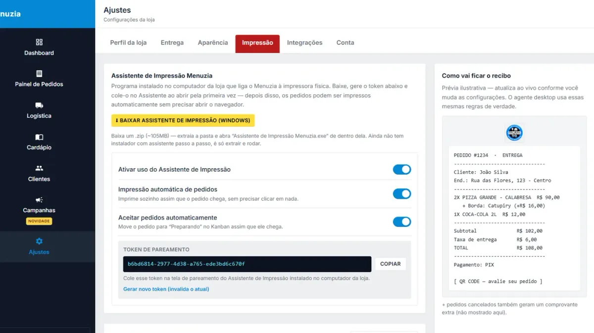

Pedido errado no delivery: como eliminar a causa e parar de pagar duas vezes

Um pedido errado no delivery sai caro três vezes: você refaz o produto, paga outra corrida e ainda arrisca perder o cliente. E a causa raramente é falta de atenção da equipe: é o caminho que a informação percorre até a cozinha.
A conta de um erro
Exemplo: lanche de R$35 com custo de R$12, mais R$8 de nova entrega. Refazer custa R$20 e consome o lucro de outro pedido. Com 3 erros por dia, são cerca de R$1.800 por mês, sem contar o cliente que não volta. Faça a conta com os seus números: calcule o custo real de cada item pelo CMV.
De onde vêm os erros
- Pedido em texto livre: "sem cebola" no meio de oito mensagens.
- Redigitação: cada cópia é uma nova chance de errar.
- Comanda à mão: letra ruim, abreviação que só uma pessoa entende.
- Vários canais: tablet de um app, celular de outro, papel no meio.
- Saída sem conferência: sacola trocada na hora do pico.
Como eliminar cada causa
- Pedido estruturado: tamanho, sabor e adicionais viram opções, não texto. O cadastro de complementos é onde isso começa.
- Campo de observação: "sem cebola" fica ligado ao item certo.
- Impressão automática: o pedido sai na cozinha sem ninguém redigitar. Veja como configurar a impressora térmica.
- Um painel para todos os canais: link próprio, iFood, 99Food e aiqfome no mesmo fluxo.
- Tela de cozinha: com KDS, cada pedido passa por fila, preparo e pronto.
Rotina de conferência em 15 segundos
- Compare número do pedido e nome na comanda e na sacola.
- Confira quantidade de itens e bebidas.
- Leia as observações em voz alta.
- Grampeie a comanda na sacola antes de entregar ao motoboy.
Errou mesmo assim?
Responda rápido, peça desculpas e resolva sem discussão. Depois anote a causa: erro que se repete é falha de processo, e não de pessoa.
Quanto custa
Cardápio, painel, impressão automática e KDS estão no plano Básico, R$97/mês, sem comissão por pedido.
Buscas relacionadas
O que donos de restaurante e delivery pesquisam antes de contratar — cada busca leva para a página que responde a ela:
Perguntas frequentes
Qual a principal causa de pedido errado no delivery?
Em geral, a informação passada à mão: pedido em texto solto, redigitação e comanda manuscrita. Tornar o pedido estruturado elimina boa parte dos erros.
Como evitar sacola trocada?
Conferindo número do pedido, nome, quantidade e observações antes de entregar ao motoboy, com a comanda presa à sacola.
Impressão automática reduz erros?
Sim, porque tira a etapa de redigitar. O pedido sai igual ao que o cliente escolheu.
Pedidos do iFood saem na mesma impressora?
Sim. Pedidos de iFood, 99Food e aiqfome entram no mesmo painel e na mesma impressora.
O erro do cliente ao pedir também é evitado?
Opções obrigatórias e o resumo antes de confirmar reduzem esse tipo de erro, mas a conferência final continua importante.
Fale com um especialista do Menuzia
Sem comissão por pedido e sem fidelidade. Planos a partir de R$97/mês, com configuração feita pela nossa equipe.
Quero conhecer o Menuzia →